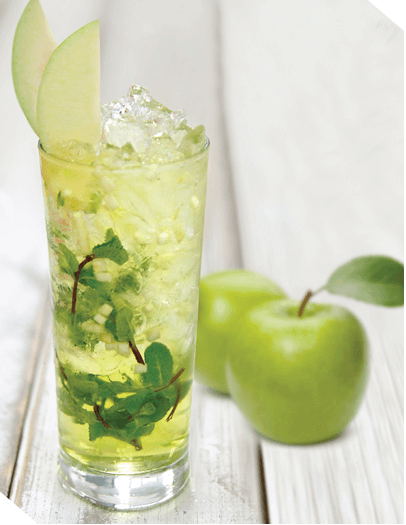
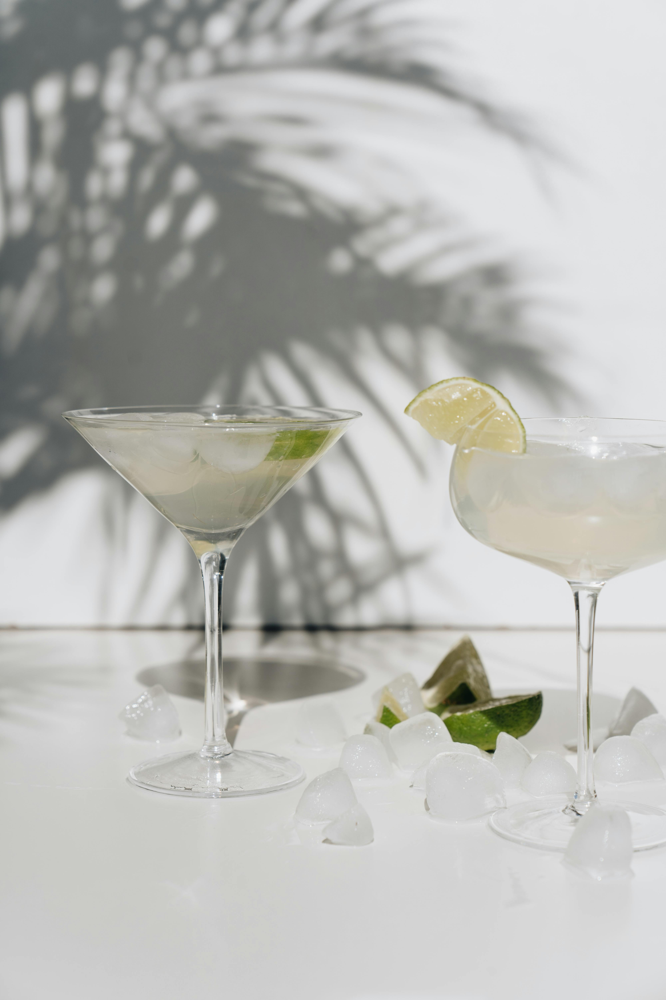
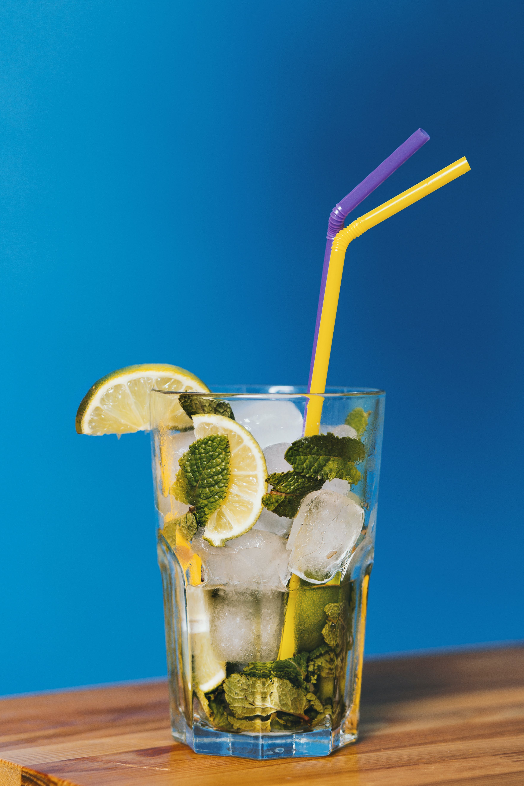
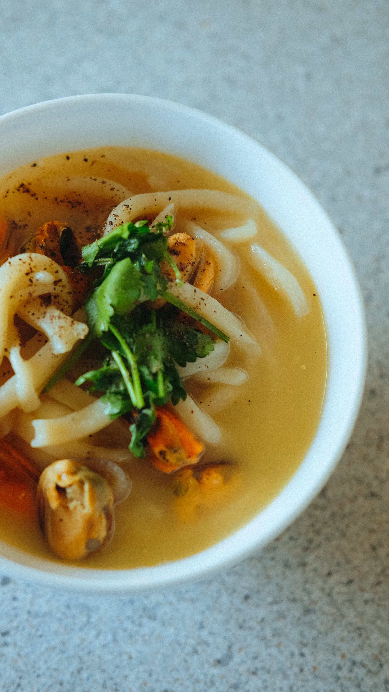
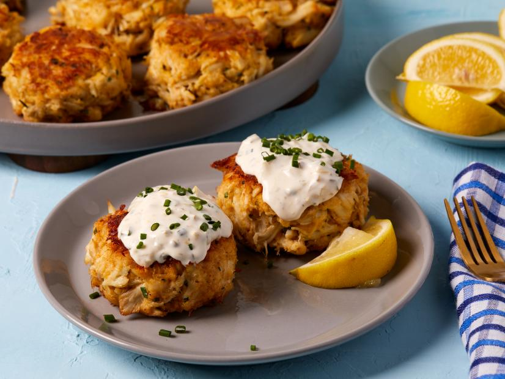
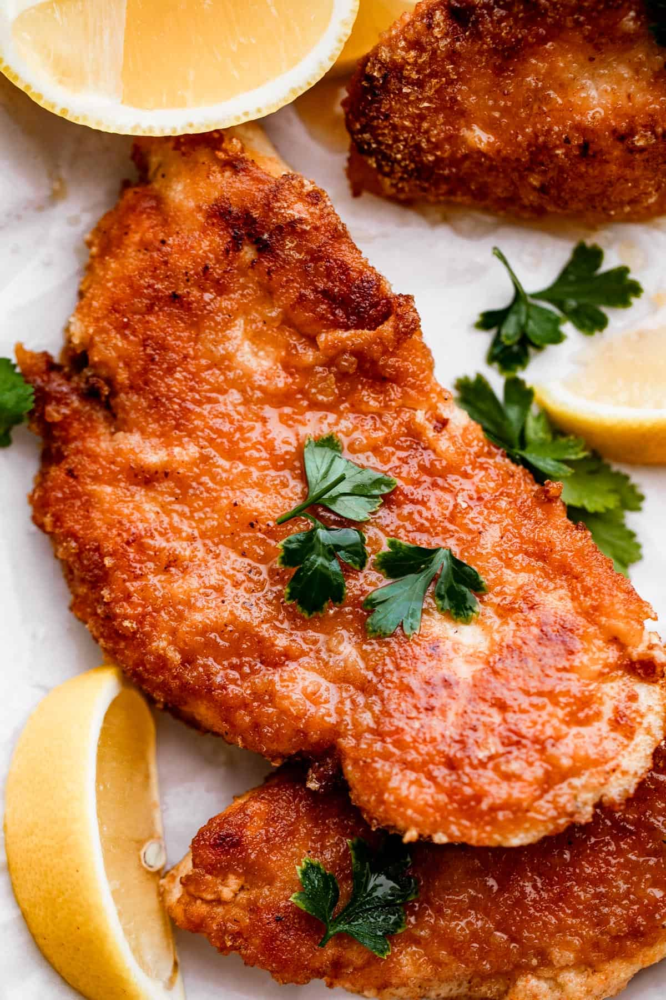
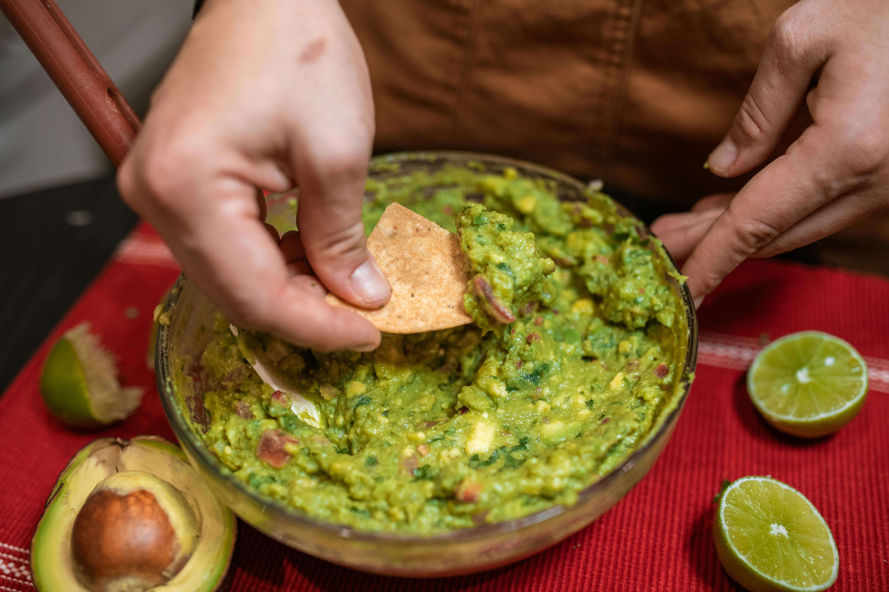
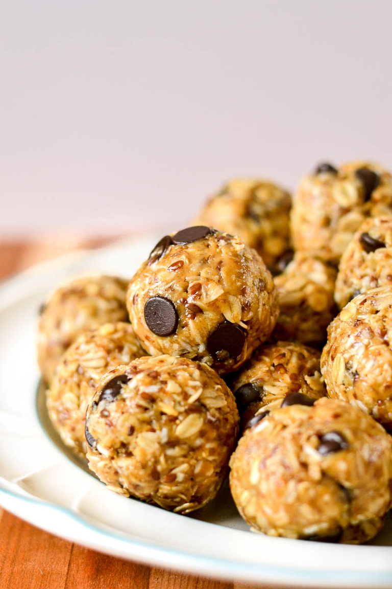

Mocktails Recipes

Crispy Strawberry Mocktail
Ingredients:
• Strawberries
• Fresh lime Sweetener
• Soda Water (sparkling water/club soda)
• Basil
How to prepare:
Step 1: Combine the strawberries, lime juice, basil, and sweetener into a bowl/jug and muddle well (or use a blender to puree).
Step 2: Optionally, strain the mixture through a fine-mesh strainer. Alternatively, simply add large ice cubes to the glass/es and top up with soda water. Stir Well
Optionally garnish with additional lemon/lime slices or even cucumber.
HOW TO STORE
Leftovers will store in the refrigerator for 2-3 days when covered (if un-strained or alternatively 4-5 days if strained). Just give it a quick stir before using and away you go.

PURPLE RAIN MOCKTAIL
Fruity, long and colourful, the purple rain gets its distinctive hue from mixing together blue curaçao and grenadine.
Ingredients:
• 300ml soda
• 1 tbsp blue curaçao
• 25ml lime juice
• 75ml grenadine coloring
• lemonade, to top up
• lime wedge, to garnish
• 75ml grenadine coloring
• lemonade, to top up
• lime wedge, to garnish
How to prepare:
• STEP 1
Pour SODA, curacao lime juice and grenadine COLORING into a highball glass filled with ice and gently stir.
• STEP 2
Top up with lemonade and garnish with a lime wedge. (If it’s not purple enough, try halving the amount of curaçao, or increase the grenadine by another 25ml.)

GREEN APPLE AND BERRY MOJITO
Yearning for a refreshing drink? If yes, then here is a cocktail recipe that will leave your taste buds impressed.
Green Apple Mojito is prepared with white rum, green apple syrup, lemon juice, soda and mint leaves; and is an apt drink for a summer party. The addition of white rum in the recipe, elevates the flavours of the drink and makes it even more enticing in taste.
So if you are bored with the regular mojito, then choose this drink that will for sure bring a wave of bracing flavours in your mouth.
INGRIDIENTS:
• 10 ml apple syrup
• 4 pieces lemon
• 1/2 teaspoon sugar
• 60 ml white rum
• 30 ml soda
• 8 cubes green apple
• 6 mint leaves
• 15 ml lemon juice
• 1/2 cup ice cubes
STEPS
• Step 1 Prepare the glass
To begin with, add ice cubes in a high ball glass followed by adding lemon pieces and mint leaves.
Then, muddle the ingredients a bit to combine them.
• Step 2 Add the ingredients
Once done, pour 60 milliliters of white rum in the glass followed by adding apple syrup (green apple syrup), sugar, lemon juice and soda. Mix well.
• Step 3 Serve
At last, add green apple cubes and lemon pieces to the drink. Stir and mix well. Serve chilled!
TIPS
Instead of sugar, you can add some honey or stevia for a healthier twist
Cocktails Recipes

Margarita
The Margarita is a classic cocktail that is typically made with tequila, triple sec (orange-flavored liqueur), and lime juice.
It is often served in a glass with a salted rim. The combination of sweet, sour, and salty flavors makes it a refreshing and popular choice.
Ingredients:
• 2 Oz tequila
• 1 Oz triple sec
• 1 Oz lime juice
• Salt (for rimming the glass)
Instructions:
1. Rim the glass with salt by moistening the rim with a lime wedge and dipping it in salt.
2. In a shaker with ice, combine tequila, triple sec, and lime juice.
3. Shake well and strain into the prepared glass over ice.
Martini
The Martini is a sophisticated cocktail known for its simplicity and elegance. It traditionally consists of gin or vodka and dry vermouth.
It is often served in a chilled martini glass and can be garnished with a lemon twist or an olive. The Martini is a symbol of classic cocktail culture.
Ingredients :
• 2 Oz gin or vodka
• 1/2 Oz dry vermouth
• Lemon twist or olive (for garnish)
How to prepare :
1. In a mixing glass with ice, combine gin or vodka and dry vermouth.
2. Stir well and strain into a chilled martini glass.
3. Garnish with a lemon twist or olive.

Mojito
The Mojito is a Cuban cocktail that features white rum, sugar (traditionally sugar cane juice), lime juice, soda water, and mint. It is known for its refreshing and minty flavor.
The cocktail is usually served over ice in a highball glass and garnished with a sprig of mint and a lime wedge.
Ingredients:
• 2 Oz white rum
• 1 Oz simple syrup
• 1 Oz lime juice
• 6-8 fresh mint leaves
• Club soda
• Lime wedge and mint sprig (for garnish)
Instructions:
1. Muddle the mint leaves and simple syrup in a glass.
2. Add rum and lime juice, then fill the glass with ice.
3. Top with club soda and stir gently.
4. Garnish with a lime wedge and a sprig of mint.
Starters Recipes

Chicken Noodle Soup
Ingredients:
1 tbsp olive oil
1 onion, chopped
2 carrots, sliced
2 celery stalks, sliced
2 cloves garlic, minced
1 tsp dried thyme
1tsp dried oregano
8 cups chicken broth
Salt and pepper to taste
2 cups cooked chicken, shredded
2 cups egg noodles
1/4 cup fresh parsley, chopped
1tsp dried oregano
8 cups chicken broth
Salt and pepper to taste
2 cups cooked chicken, shredded
2 cups egg noodles
1/4 cup fresh parsley, chopped
Instructions:
1. Sauté onion, carrots, celery, and garlic in olive oil.
2. Add thyme, oregano, chicken broth, salt, and pepper.
3. Add shredded chicken, then bring to a simmer.
4. Add egg noodles and cook until done.
5. Stir in fresh parsley and remove from heat.
6. Serve hot and enjoy your quick and delicious chicken noodle soup!
s

1 head of romaine lettuce, washed and chopped
1 cup croutons
1/2 cup freshly grated Parmesan cheese
Classic Caesar Salad
Ingredients:1 head of romaine lettuce, washed and chopped
1 cup croutons
1/2 cup freshly grated Parmesan cheese
For the Dressing:
1/2 cup mayonnaise
1/4 cup grated Parmesan cheese
2 tablespoons lemon juice
1 tablespoon Dijon mustard
2 garlic cloves, minced
1/2 teaspoon Worcestershire sauce
Salt and pepper to taste
, lemon juice, Dijon mustard, minced garlic, Worcestershire sauce, salt, and pepper.
Adjust seasoning to taste.
2. Assemble the Salad: Place chopped romaine lettuce in a large salad bowl.
3. Add Croutons Sprinkle croutons over the lettuce.
4.Drizzle the Caesar dressing over the lettuce and croutons. Toss the salad
gently to coat the ingredients evenly.
5. Grate Parmesan - Just before serving, sprinkle freshly grated Parmesan cheese
on top.
6 Serve the Caesar salad immediately as a refreshing and classic side dish.
1 tablespoon Dijon mustard
2 garlic cloves, minced
1/2 teaspoon Worcestershire sauce
Salt and pepper to taste
Instructions
1. In a bowl, whisk together mayonnaise, grated Parmesan cheese, lemon juice, Dijon mustard, minced garlic, Worcestershire sauce, salt, and pepper.
Adjust seasoning to taste.
2. Assemble the Salad: Place chopped romaine lettuce in a large salad bowl.
3. Add Croutons Sprinkle croutons over the lettuce.
4.Drizzle the Caesar dressing over the lettuce and croutons. Toss the salad
gently to coat the ingredients evenly.
5. Grate Parmesan - Just before serving, sprinkle freshly grated Parmesan cheese
on top.
6 Serve the Caesar salad immediately as a refreshing and classic side dish.

QUICK AND EASY CRAB CAKES
INGRIDIENTS:
• 1 pound lump crabmeat, picked over for shells
• 1/3 cup mayonnaise
• 1 tablespoon Dijon mustard
• 1 teaspoon Worcestershire sauce
• 1 teaspoon Old Bay seasoning
• 1/4 cup finely chopped parsley
• Salt and pepper to taste
• 1 cup breadcrumbs
• 2 tablespoons butter, for cooking
STEPS
1. In a bowl, mix crabmeat, mayonnaise, Dijon mustard, Worcestershire sauce,
Old Bay seasoning, parsley, salt, and pepper. Add breadcrumbs and gently combine.
2. Shape the mixture into crab cakes, about 1/2 inch thick.
3. Heat butter in a pan over medium heat. Cook crab cakes for 4-5 minutes per
side or until golden brown.
4. Serve the crab cakes with a side of your favorite dipping sauce and enjoy!
Main Course Recipes
see more...

Chicken and Fish
Ingredients:
fish
• 1 pound cod, haddock, or other firm-fleshed white fish, cut into 1-inch pieces
• Salt and pepper to taste
• 1/4 cup all-purpose flour
• 1 tablespoon baking powder
• 1/2 teaspoon salt
• 1/4 cup milk
Chips
• 1/2 cup vegetable oil for frying
• 2 pounds russet potatoes, peeled and cut into 1/2-inch thick fries
• 1/2 cup vegetable oil for frying
• Salt to taste
2 cups egg noodles
• 1/2 teaspoon salt
• 1/4 cup milk
Chips
• 1/2 cup vegetable oil for frying
• 2 pounds russet potatoes, peeled and cut into 1/2-inch thick fries
• 1/2 cup vegetable oil for frying
• Salt to taste
2 cups egg noodles
Instructions:
1. Preheat the oven to 200 degrees F (93 degrees C). Line a baking sheet with paper towels.
2. In a shallow bowl, whisk together the flour, baking powder, and salt. In a separate bowl, whisk together the milk and egg.
3. Dredge the fish in the flour mixture, then dip in the milk mixture.
4. Heat the oil in a large skillet over medium-high heat. Fry the fish in batches until golden brown and cooked through, about 3 to 4 minutes per batch.
5. Transfer the fish to the prepared baking sheet and keep warm in the oven.
6. To make the chips, heat the oil in a large pot over medium-high heat. Fry the chips in batches until golden brown and crispy, about 5 to 7 minutes per batch.
7. Drain the chips on paper towels and sprinkle with salt.
8. To make the tartar sauce, whisk together all of the ingredients in a small bowl.
9. Serve the fish and chips with tartar sauce and malt vinegar.
s

For the Bolognese Sauce:
• 2 tablespoons olive oil
• 1 onion, finely chopped
• 2 carrots, finely chopped
• 2 celery stalks, finely chopped
• 2 cloves garlic, minced
• 1 pound ground beef
• 1/2 pound ground pork
• 1/2 cup dry red wine
Lasagna bolognese
Ingredients:For the Bolognese Sauce:
• 2 tablespoons olive oil
• 1 onion, finely chopped
• 2 carrots, finely chopped
• 2 celery stalks, finely chopped
• 2 cloves garlic, minced
• 1 pound ground beef
• 1/2 pound ground pork
• 1/2 cup dry red wine
• 1 (28-ounce) can crushed tomatoes
• 1 cup beef broth
• 1 teaspoon dried oregano
• 1/2 teaspoon dried basil
• Salt and pepper to taste
For the Béchamel Sauce:
2. Deglaze the pot with the red wine, scraping up any browned bits from the bottom of the pot. Add the crushed tomatoes, beef broth, oregano, basil, salt, and pepper. Bring to a simmer and cook, stirring occasionally, for at least 1 hour, or up to 4 hours.
3. Make the Béchamel Sauce: Melt the butter in a medium saucepan over medium heat. Whisk in the flour and cook for 1 minute, whisking constantly. Gradually whisk in the milk, salt, and pepper. Bring to a simmer and cook, stirring occasionally, until thickened, about 5 minutes. Remove from heat and stir in the Parmesan cheese.
4. Preheat oven to 375 degrees F (190 degrees C).
5. Assemble the lasagna: Spread a thin layer of Bolognese sauce on the bottom of a 9x13-inch baking dish. Top with a layer of lasagna noodles. Spread a thin layer of Béchamel sauce over the noodles, then sprinkle with Parmesan cheese and mozzarella cheese. Repeat the layers, ending with a layer of sauce and cheese.
6. Cover the baking dish with aluminum foil and bake for 30 minutes. Uncover and bake for 30 minutes more, or until the lasagna is bubbly and the cheese is melted and golden brown.
7. Let stand for 10 minutes before serving.
• 1 cup beef broth
• 1 teaspoon dried oregano
• 1/2 teaspoon dried basil
• Salt and pepper to taste
For the Béchamel Sauce:
• 1/2 cup unsalted butter
• 1/2 cup all-purpose flour
• 4 cups milk
• 1/2 teaspoon salt
• 1/4 teaspoon freshly ground black pepper
• 1/4 cup grated Parmesan cheese
• 1 pound lasagna noodles
• 1 cup grated Parmesan cheese
• 1 cup shredded mozzarella cheese
Instructions
1. Make the Bolognese Sauce: Heat the olive oil in a large pot over medium heat. Add the onion, carrots, celery, and garlic and cook until softened, about 5 minutes. Add the ground beef and pork and cook until browned. Drain off any excess grease.2. Deglaze the pot with the red wine, scraping up any browned bits from the bottom of the pot. Add the crushed tomatoes, beef broth, oregano, basil, salt, and pepper. Bring to a simmer and cook, stirring occasionally, for at least 1 hour, or up to 4 hours.
3. Make the Béchamel Sauce: Melt the butter in a medium saucepan over medium heat. Whisk in the flour and cook for 1 minute, whisking constantly. Gradually whisk in the milk, salt, and pepper. Bring to a simmer and cook, stirring occasionally, until thickened, about 5 minutes. Remove from heat and stir in the Parmesan cheese.
4. Preheat oven to 375 degrees F (190 degrees C).
5. Assemble the lasagna: Spread a thin layer of Bolognese sauce on the bottom of a 9x13-inch baking dish. Top with a layer of lasagna noodles. Spread a thin layer of Béchamel sauce over the noodles, then sprinkle with Parmesan cheese and mozzarella cheese. Repeat the layers, ending with a layer of sauce and cheese.
6. Cover the baking dish with aluminum foil and bake for 30 minutes. Uncover and bake for 30 minutes more, or until the lasagna is bubbly and the cheese is melted and golden brown.
7. Let stand for 10 minutes before serving.

CHICKEN SCHNITZEL
INGRIDIENTS:
• 4 boneless, skinless chicken breasts
• 1/2 cup all-purpose flour
• 2 large eggs, beaten
• 1 1/2 cups panko breadcrumbs
• 1 tablespoon garlic powder
• 1 teaspoon salt
• 1/2 teaspoon black pepper
• Vegetable oil for frying
• Lemon wedges, for serving
• Vegetable oil for frying
• Lemon wedges, for serving
STEPS
1. Place the chicken breasts between two pieces of plastic wrap and pound them thin with a meat mallet or the bottom of a heavy pan.
2. In three separate shallow bowls, place the flour, beaten eggs, and panko breadcrumbs. Season the flour with garlic powder, salt, and pepper.
3. Dredge each chicken breast in the flour, then the eggs, and finally the breadcrumbs.
4. Heat about 1/2 inch of vegetable oil in a large skillet over medium-high heat. Fry the chicken breasts in batches until golden brown and crispy on both sides, about 3-4 minutes per batch.
5. Drain the chicken breasts on paper towels and serve immediately with lemon wedges.
Snack Recipes

Guacamole
Ingredients:
• 3 ripe avocados
• 1 small red onion, finely diced
• 1-2 tomatoes, diced
• 1/4 cup fresh cilantro, chopped
• 1-2 cloves garlic, minced
• 1 lime, juiced
• Salt and pepper to taste
• Optional: Jalapeño, diced (for some heat)
Chips
• 1/2 cup vegetable oil for frying
• 2 pounds russet potatoes, peeled and cut into 1/2-inch thick fries
• 1/2 cup vegetable oil for frying
• Salt to taste
2 cups egg noodles
• 1/2 cup vegetable oil for frying
• 2 pounds russet potatoes, peeled and cut into 1/2-inch thick fries
• 1/2 cup vegetable oil for frying
• Salt to taste
2 cups egg noodles
Instructions:
1. Prepare the Avocados:
Cut the avocados in half, remove the pits, and scoop the flesh into a mixing bowl.
2. Mash the Avocados:
Use a fork to mash the avocados to your desired consistency. Some like it chunky, while others prefer it smooth.
3. Add the Vegetables:
Add the diced red onion, tomatoes, cilantro, and minced garlic to the mashed avocados.
4. Seasoning:
Squeeze the juice of one lime into the mixture. Add salt and pepper to taste. If you like some heat, add diced jalapeño.
5. Mix Well:
Gently mix all the ingredients until well combined. Be careful not to overmix, as guacamole is best when it has a slightly chunky texture.
6. Taste and Adjust:
Taste the guacamole and adjust the seasoning according to your preferences. You might need more lime juice, salt, or pepper.
7. Serve:
Transfer the guacamole to a serving bowl. You can garnish it with additional cilantro or a slice of lime. Serve it with tortilla chips or as a topping for tacos, nachos, or any of your favorite dishes.

Caprese Skewers
Ingredients:• Cherry tomatoes • Fresh mozzarella balls (or cut a block into bite-sized pieces) • Fresh basil leaves • Balsamic glaze • Extra virgin olive oil • Salt and pepper to taste • Toothpicks or small skewers
Instructions
1. Prepare Ingredients:Wash the cherry tomatoes and basil leaves.
If you're not using pre-shaped mozzarella balls, cut the mozzarella into bite-sized pieces.
2. Assemble Skewers:
Take a toothpick or small skewer and thread on a cherry tomato, followed by a basil leaf, and then a mozzarella ball.
3. Repeat:
Repeat the process until you have as many skewers as desired.
4. Arrange:
Arrange the caprese skewers on a serving platter or plate.
5. Drizzle with Balsamic Glaze and Olive Oil:
Drizzle balsamic glaze and extra virgin olive oil over the skewers. The balsamic glaze adds a sweet and tangy flavor.
6. Season:
Sprinkle a pinch of salt and pepper over the skewers to enhance the flavors.
7. Serve:
Serve immediately and enjoy the fresh and vibrant flavors of the classic caprese combination.
3. Repeat:
Repeat the process until you have as many skewers as desired.
4. Arrange:
Arrange the caprese skewers on a serving platter or plate.
5. Drizzle with Balsamic Glaze and Olive Oil:
Drizzle balsamic glaze and extra virgin olive oil over the skewers. The balsamic glaze adds a sweet and tangy flavor.
6. Season:
Sprinkle a pinch of salt and pepper over the skewers to enhance the flavors.
7. Serve:
Serve immediately and enjoy the fresh and vibrant flavors of the classic caprese combination.

No-Bake Energy Bites
INGRIDIENTS:
• 1 cup old-fashioned oats
• 1/2 cup peanut butter (or any nut/seed butter of your choice)
• 1/3 cup honey or maple syrup
• 1 cup coconut flakes
• 1/2 cup ground flaxseed
• 1/2 cup mini chocolate chips
• 1 teaspoon vanilla extract
• A pinch of salt (optional)
• 1 cup coconut flakes
• 1/2 cup ground flaxseed
• 1/2 cup mini chocolate chips
• 1 teaspoon vanilla extract
• A pinch of salt (optional)
STEPS
1. Combine Dry Ingredients:
In a large mixing bowl, combine the oats, coconut flakes, ground flaxseed, mini chocolate chips, and a pinch of salt if desired.
2. Add Wet Ingredients:
Add the peanut butter, honey (or maple syrup), and vanilla extract to the dry ingredients.
3. Mix Well:
Stir all the ingredients until well combined. The mixture should be sticky and hold together.
4. Chill:
Place the mixture in the refrigerator for about 30 minutes. Chilling will make it easier to form the energy bites.
5. Form Bites:
Once chilled, take small portions of the mixture and roll them into bite-sized balls. You can adjust the size according to your preference.
6. Store:
Place the energy bites on a parchment-lined tray or plate and refrigerate for an additional 15-20 minutes to firm up.
7. Serve:
Once the energy bites are firm, transfer them to an airtight container and store in the refrigerator. They are ready to be enjoyed as a quick and healthy snack!